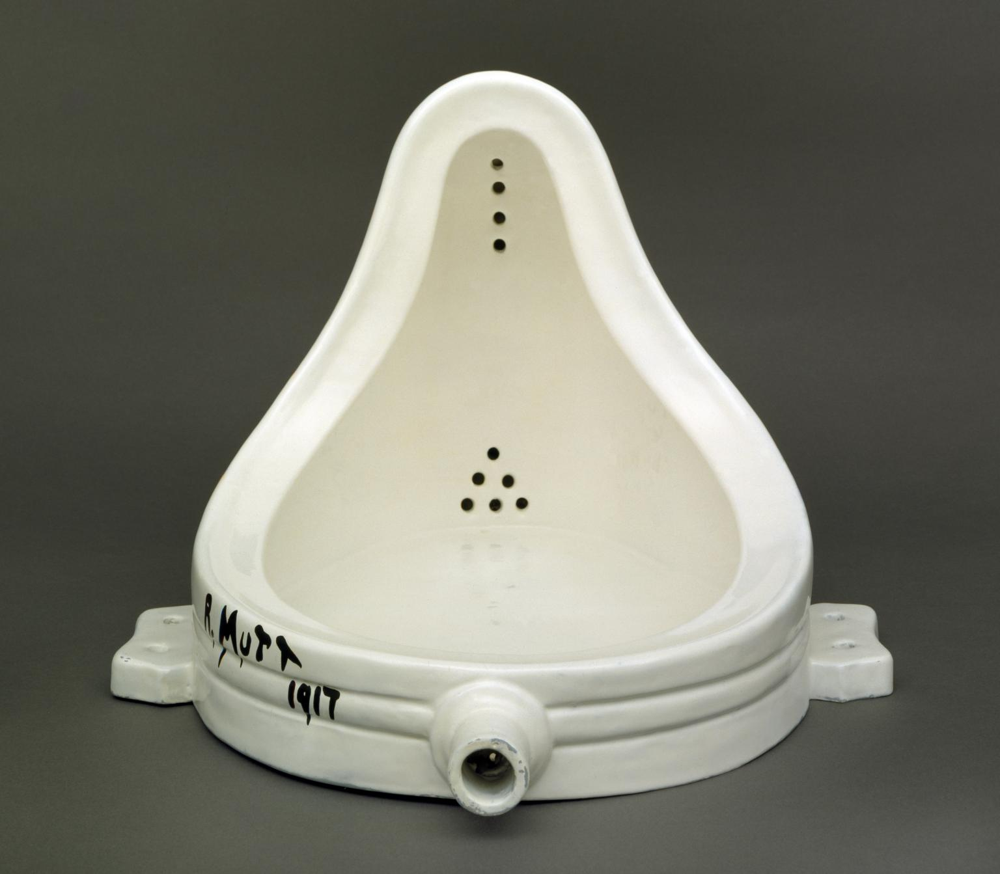
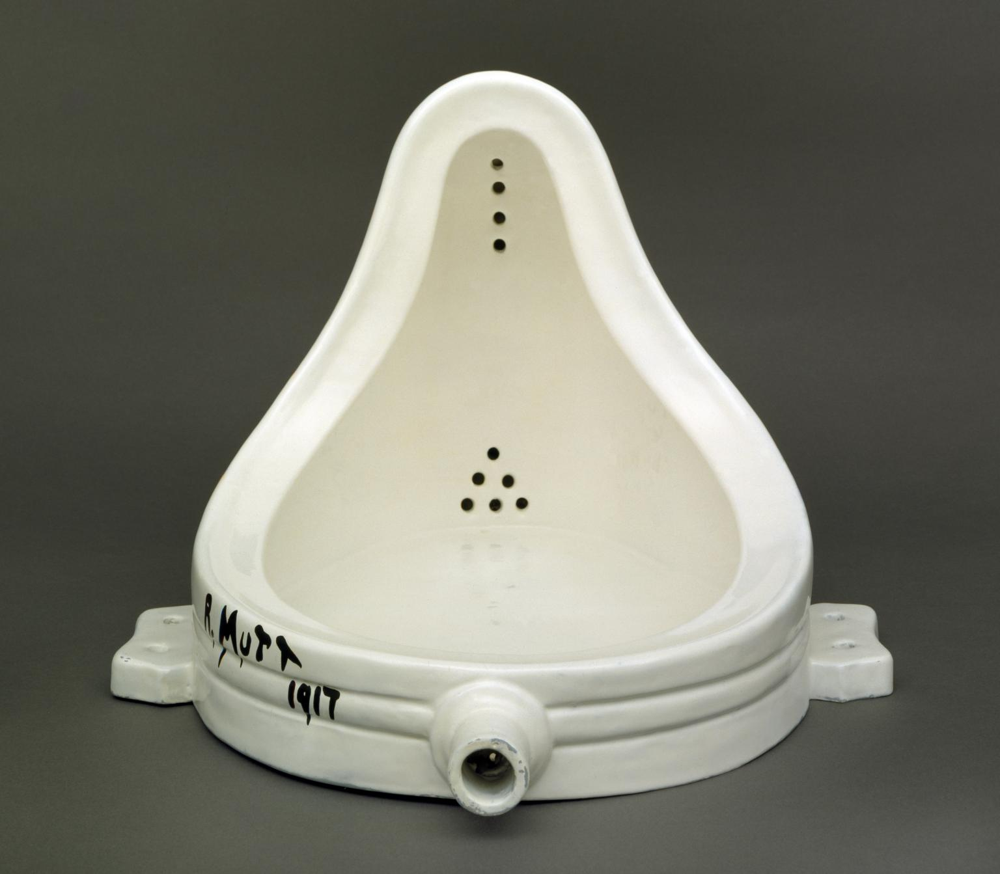

“All production is appropriation of nature on the part of an individual within and through a specific form of society. In this sense it is a tautology to say that property (appropriation) is a precondition of production.”
In Praise of Copying 2013, Marcus Boon
SUMÁRIO: Este projeto ir-se-á dividir em três partes, sendo que a primeira terá como propósito ser um guia que explora o tema da apropriação, cópia, citação ou contrafacção na arte. A segunda parte, por seu lado, pretende ser um léxico, no qual poderemos encontrar e compreender melhor os vários significados das palavras acima destacadas. Por ultimo, na terceira, serão expostos vários exemplos de projetos que utilizam a técnica da apropriação, bem como os artistas e designers que a utilizam no seu processo criativo. OBJETIVOS:// apresentar a nova estética que nasceu na era de pós-internet; // compreender os diferentes significados da palavra apropriação assim como a forma como o seu significado afeta o seu uso; // explorar as técnicas de apropriação existentes na Web - cópia, colagem, remix, repetição, compilação, apropriação, etc. - bem como saber a forma como as mesmas são utilizadas; // investigar como os artistas e designers têm utilizado conscientemente a apropriação no seu trabalho; // prestar homenagem aos criadores que utilizam estas técnicas. METODOLOGIA:// recolha de textos que apresentem e explorem a evolução da técnica da apropriação ao longo do tempo, nas artes em geral e no design em particular; // investigação, compilação e edição dos textos e das referências relacionadas com o tema;
//exemplificação/ utilização das técnicas de apropriação no projeto por forma a demonstrar como as mesmas podem ser úteis na configuração de artefactos, em específico na Web. RESULTADO: O resultado previsto pretende ser a criação de um objeto que irá promover uma discussão sobre o que a técnica da apropriação pode modificar/ alterar um objeto, uma vez que é um método criativo utilizado na arte de design em específico. Esse resultado será alcançado depois de entender como funciona esta técnica com a análise de exemplo de objetos variados por forma a constatar como a apropriação é usada por diversos artistas. Assim, com a exemplificação desta técnica e a criação do objeto apresentado pretende-se promover uma reflexão sobre como a apropriação está intrínseca na criação de artefactos numa era pós-internet.
Img1- Screenshot de Life Sharing archives, %Transfer IHQX (1998); Img2- Fotografia de Marcel Duchamp ADAGP créditos Tate; Img3- Marilyn Monroe de Andy Warhol; Gif1- Search by Image de Sebastian Schmieg, 2011; Gif2- Versions de Oliver Laric, 2010
 
